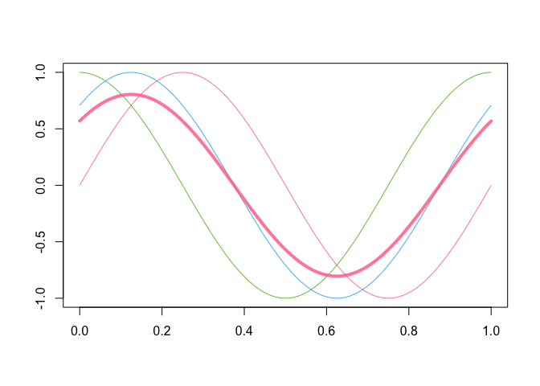
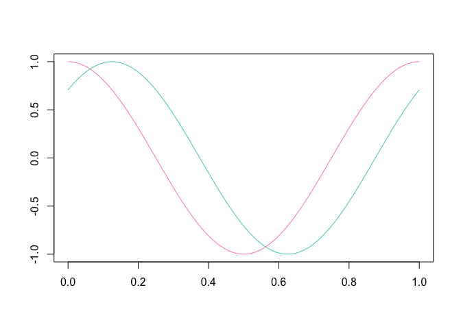

The roahd (Robust Analysis of High-dimensional Data) package allows to use a set of statistical tools for the exploration and robustification of univariate and multivariate functional datasets through the use of depth-based statistical methods.
In the implementation of functions, special attention was put to their efficiency, so that they can be profitably used also for the analysis of high-dimensional datasets.
For a full-featured description of the package, please take a look at the roahd vignette.
Installation
Install the released version of roahd from CRAN:
install.packages("roahd")
Or install the development version from GitHub with:
# install.packages("remotes") remotes::install_github("astamm/roahd")
fData and mfData objects
A simple S3 representation of functional data object, fData, allows to encapsulate the important features of univariate functional datasets (like the grid of the dependent variable, the pointwise observations, etc.):
library(roahd) # Grid representing the dependent variable grid = seq( 0, 1, length.out = 100 ) # Pointwise measurements of the functional dataset Data = matrix( c( sin( 2 * pi * grid ), cos ( 2 * pi * grid ), sin( 2 * pi * grid + pi / 4 ) ), ncol = 100, byrow = TRUE ) # S3 object encapsulating the univariate functional dataset fD = fData( grid, Data ) # S3 representation of a multivariate functional dataset mfD = mfData( grid, list( 'comp1' = Data, 'comp2' = Data ) )
Also, this allows to exploit simple calls to customized functions which simplifies the exploratory analysis:
# Algebra of fData objects fD + 1 : 100 fD * 4 fD + fD # Subsetting fData objects (providing other fData objects) fD[ 1, ] fD[ 1, 2 : 4] # Sample mean and (depth-based) median(s) mean( fD ) mean( fD[ 1, 10 : 20 ] ) median_fData( fD, type = 'MBD' )

plot( fD[ 2:3, ] )

Robust methods for functional data analysis
A part of the package is specifically devoted to the computation of depths and other statistical indices for functional data:
- Band depths and modified band depths,
- Modified band depths for multivariate functional data,
- Epigraph and hypograph indexes,
- Spearman and Kendall’s correlation indexes for functional data,
- Confidence intervals and tests on Spearman’s correlation coefficients for univariate and multivariate functional data.
These also are the core of the visualization / robustification tools like functional boxplot (fbplot) and outliergram (outliergram), allowing the visualization and identification of amplitude and shape outliers.
Thanks to the functions for the simulation of synthetic functional datasets, both fbplot and outliergram procedures can be auto-tuned to the dataset at hand, in order to control the true positive outliers rate.
Citation
If you use this package for your own research, please cite the corresponding R Journal article:
To cite roahd in publications use:
Ieva, F., Paganoni, A. M., Romo, J., & Tarabelloni, N. (2019). roahd
Package: Robust Analysis of High Dimensional Data. The R Journal,
11(2), pp. 291-307.
A BibTeX entry for LaTeX users is
@Article{,
title = {{roahd Package: Robust Analysis of High Dimensional Data}},
author = {Francesca Ieva and Anna Maria Paganoni and Juan Romo and Nicholas Tarabelloni},
journal = {{The R Journal}},
year = {2019},
volume = {11},
number = {2},
pages = {291--307},
url = {https://doi.org/10.32614/RJ-2019-032},
}